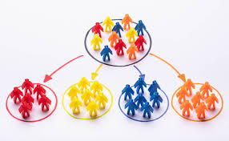
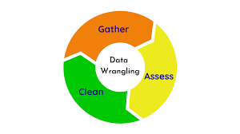
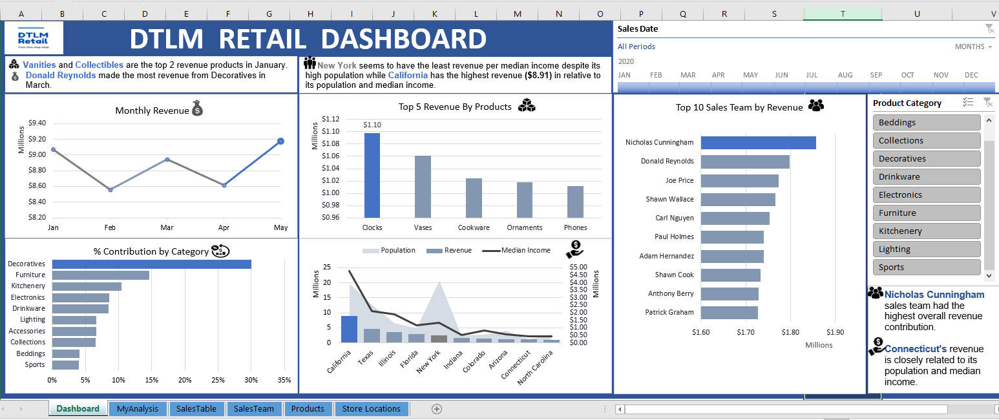
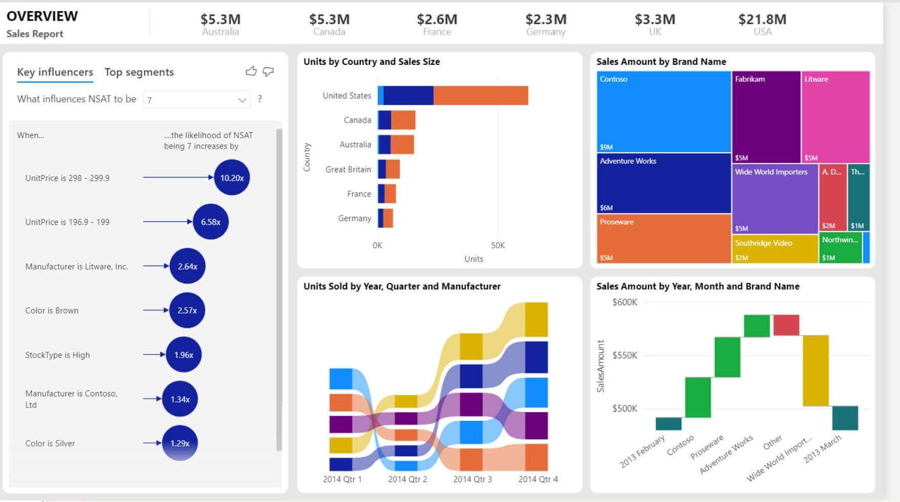

In this project, a business solution was created in the form of a fictional library named ACAB. ACAB was created to solve a business information system
problem where the conventional library system which is the manual process of library operation existed.
It is an automated system that will make the operation seamless in which users can have access to books directly
from their homes or any location using their devices without having to physically visit the library.
The following models developed in order to come up with a solution.
- A business model canvas.
- A mind map of solutions to the problems (developed with Xmind)
- The process map of how the system/mobile app will flow or communicate (A dataflow diagram developed with Microsoft visio)
- The prototype of the solution (developed with Pencil Project app)
According to WHO, in 2019, the top 10 causes of death accounted for 55% of the 55.4 million deaths worldwide.
The top global causes of death, in order of total number of lives lost, are associated with three broad topics-
cardiovascular (ischaemic heart disease, stroke), respiratory (chronic obstructive pulmonary disease, lower
respiratory infections) and neonatal conditions.
Analyses and visualizations were performed on the data using
Python's Numpy, Pandas and matplotlib/seaborn libraries.

Using Microsoft SQL Server Management System (MSSMS), I implemented the concept of transactions
and rollback in a database.
I also performed some actions to demonstrate how Stored Procedures and Triggers work.

I utilized Excel's power query functionalities to perform some data cleaning and used pivot tables to explore and visualize trend of sales over a period of 4 years.

I completed a customer segmentation task to predict who will respond to an offer for a product or service using K-means and Agglomerative clustering.
A good response model can provide a significant boost to the efficiency of a marketing campaign by increasing responses or reducing expenses.

In this project, I utilized the power Excel and Python to transpose, rearrange, explore and analyse a qualitative dataset from a horizontal
format into a vertical usable format.
The source of data was an interview that was conducted with Survey Monkey and contains two header rows .
This analysis is about football players from the popular FIFA 22 video football game.
It is concentrated around:
Data cleaning and preprocessing, respective clubs of top players,
their nationalities, and their corresponding skills and attributes that make them stand out.

Customer churn prediction refers to detecting which customers are likely to leave a service or terminate
their subscription to a service. It is very critical for businesses because gaining new clients often costs
more than retaining the existing ones.
Investing in or acquiring new clients is a non-negotiable investment for any company.
When a client leaves, it represents a significant loss for the business.
A lot of resources need to be channelled into replacing them.
In this project, I trained the model and tried to predict the likelihood that a customer will churn.

In this project, permormed some data modelling, exploration, analysis and visualization on a set of sales information for DTLM.
I answered some questions by creating several pivot tables, a slicer and an interactive dashboard.

Data modelling was carried out on an IT company's actual spend, budget spend and forecast data. A further analysis was carried out by
utilizin the functionalities of power query by creating more tables and linking them using primary and secondary keys from the model,
while performing some financial calculations using some DAX formulas and then visualizing the data.